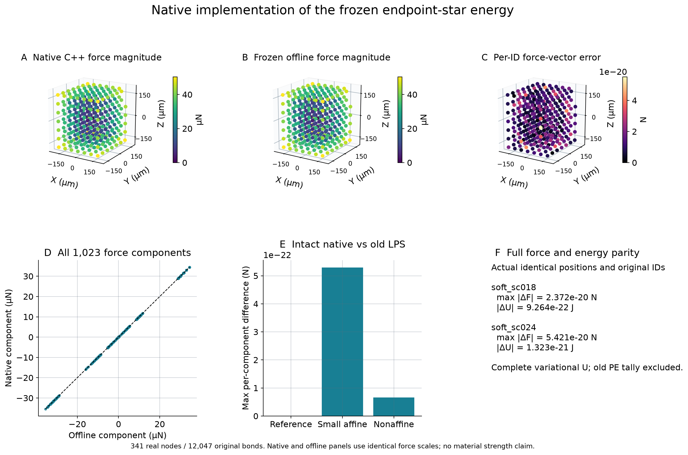
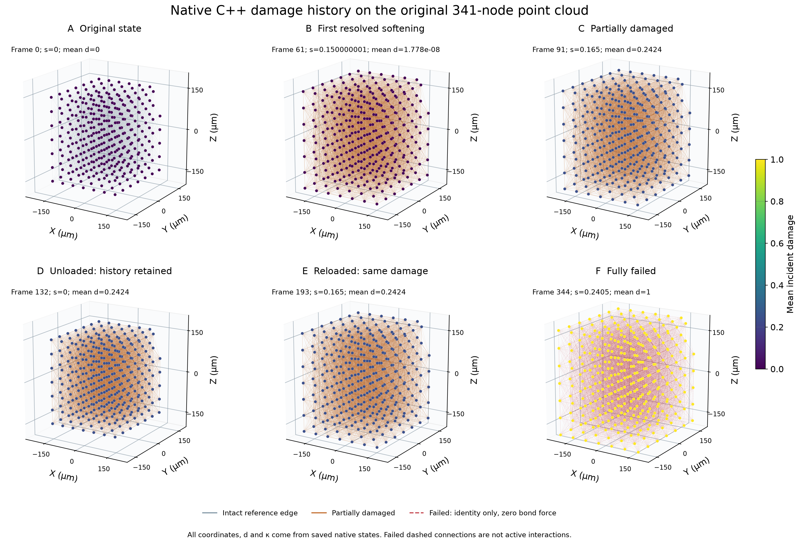
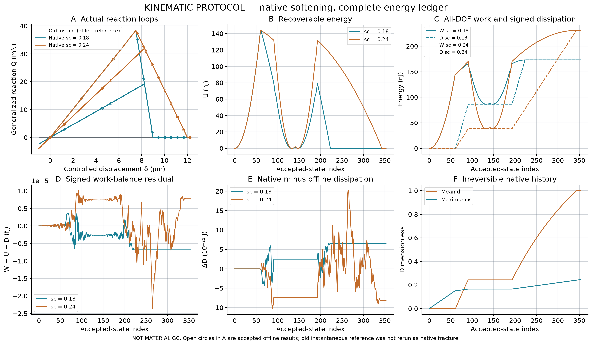
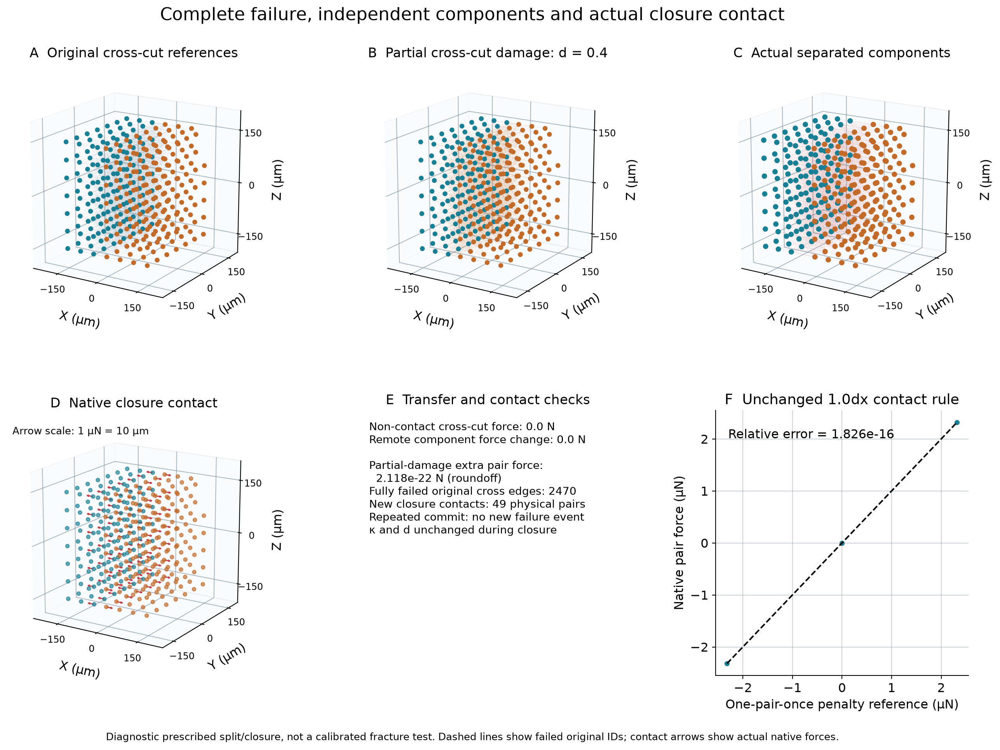
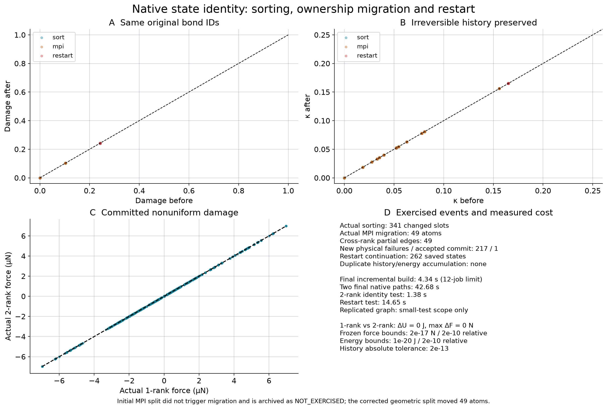

341真实节点、12,047原始键。原生力、完整自由能、损伤与耗散对照通过；真实排序、49个节点的MPI迁移、restart继续及1.0dx闭合接触通过。仅为规定运动学小试样；未认证宏观强度、材料Gc或V3。首次无迁移诊断及安全修正前版本均保留。
中文报告与40项回答 · 分项验收状态Actual isolated C++ node forces, frozen offline forces, per-ID errors and complete energy. Intact old-LPS control is independently labeled.
SVG
Real original atom/bond IDs: intact, onset, partial damage, unload, reload, full failure. Dashed failed edges retain reference identity only.
SVG
Native Q, U, W, signed D and residual with accepted offline controls. Identical split-update time layer; no inertia, damping or quasi-static equilibrium claim.
SVG
Exactly zero non-contact failed-edge transfer and remote-component response; real native 1.0dx closure repulsion compared with the unchanged pair penalty.
SVG
Actual sort/MPI/restart histories, true single/two-rank forces, event counts and measured performance. No unexercised event is plotted as PASS.
SVG